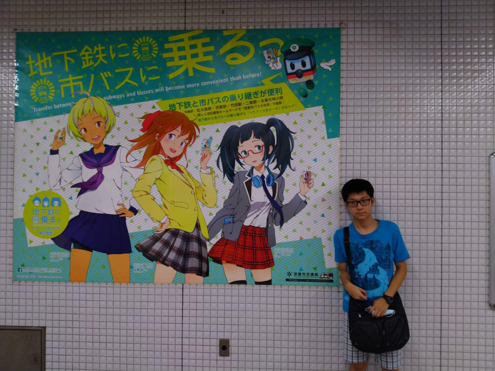

升大一暑假
去日本關西旅遊(第七次遊日)，遊京都、大阪、奈良
回國隔天開始去中原先修微積分、大一英文，提前
體驗大學生活，成功抵免大一上英文。
HTML
CSS
JavaScript
去日本關西旅遊(第七次遊日)，遊京都、大阪、奈良
回國隔天開始去中原先修微積分、大一英文，提前
體驗大學生活，成功抵免大一上英文。
管理學去育幼院，陪伴小朋友過聖誕，製作道具。
在資訊科技導論課程中，了解身為資管人的價值，與科技發展趨勢。
去自動控制研習社學習焊接電路，了解電路實作。
周末回家都在讀書，穩固自己的學業基礎。
企業概論，幫助肯納自閉症協會出售肥皂，幫忙手寫商品的贈品小卡；還幫別組想文案。
在企業資料通訊的期末報告，以智慧家庭為主題寫得了高分。
去知名的日文補習班永漢日文上密集班，平日每天早上九點上課，就算是暑假仍奮發向上，開學前一週報名JLPT N5，十二月考試。
網路程式設計，期末專案自己包了前後端，第一次做中大型專案，仍有龐大的進步空間。網頁連結
選修國貿系的商用日文(三)，為十二月的考試做準備，雖然很辛苦，但是收穫很多，最後N5以閱讀112分、聽力51分，高分通過，為首張國際證書；為了大二英文分數報了全民英檢中級初試，也高分通過，結果英文總成績全班最高。
別嫌棄N5證書，要得到它也是要花心思準備的
多媒體程式設計，與同學一同完成期中專案，幾週後在決策支援與商業智慧的期中報告中，利用多媒所學作了一個有關少子化議題的網頁。多媒期中連結
選修了英語簡報技巧課，訓練自己的膽量、溝通與表達能力，與實務應變能力，每個月都有一個大簡報。
現階段確保這學期ALLPASS，今年暑假再回去永漢日文補到N4，期望未來能去日本交換。